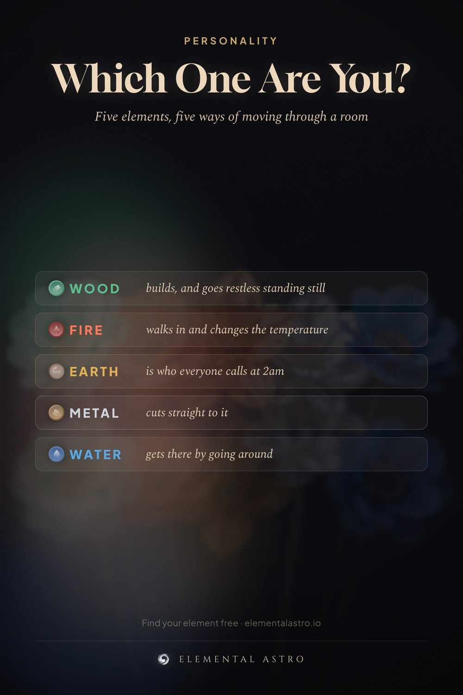

Wood people build things and get restless when they can’t. Fire people walk into a room and change its temperature. Earth people are who everyone calls at 2am. Metal people cut straight to it. Water people get there by going around. Which one is you? Five element personality, Chinese astrology personality types.
https://www.elementalastro.io/tools/energy-chart-calculator